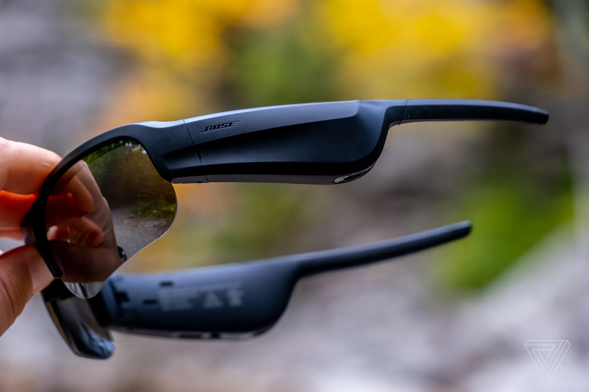
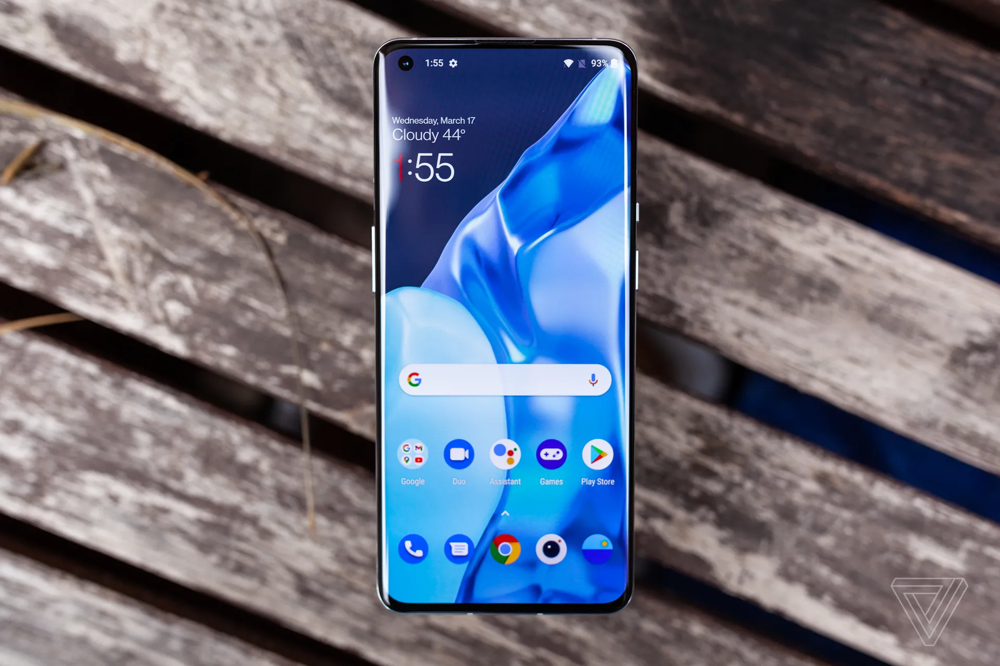

BOSE FRAMES TEMPO REVIEW: THE SPECS TO BEAT
Bose’s sporty shades offer good sound, a steady fit, and total awareness
It’s still fair to call audio sunglasses a niche category, but with Bose offering several models, Amazon in the game, and counting recent announcements from Razer and JLab, it’s certainly a growing one.
Read More

ONEPLUS 9 PRO REVIEW: A REFINED, NICHE FLAGSHIP
Fast charging and elegant software offset a so-so camera
heThe hardware design on the OnePlus 9 Pro is the most seamless, elegant phone that the company has designed to date.
Read More